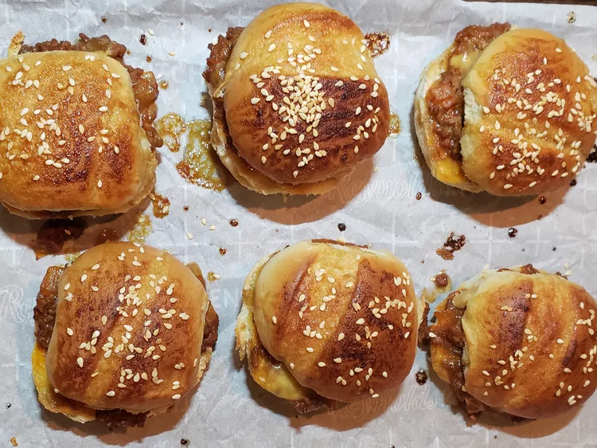

Sloppy Joe Sliders
Home

Description
Serve these sloppy Joe sliders at your next gathering and watch them disappear! Traditional sloppy Joe filling is served on soft bakery rolls with a delicious baked glaze on top. Try BBQ sauce as a dipper—fantastic!
Ingredients
Sliders
- 1 (12-count) package artisan soft bakery rolls
- 24 small slices sharp Cheddar cheese
- 1 teaspoon olive or avocado oil
- 1 pound 80% lean ground beef
- 1/2 large white onion, finely chopped
- 2 teaspoons garlic paste
- 1 cup ketchup
- 2 tablespoons brown sugar
- 1 teaspoon Dijon mustard
- 3 teaspoons Worcestershire sauce
- 1 teaspoon chili powder and/or cumin
- Salt and freshly ground black pepper to taste
- 3/4 cup water
Glaze
- 1/4 cup butter, melted
- 1/2 tablespoon brown sugar
- 1 teaspoon ketchup
- 1 teaspoon Worcestershire sauce
- 1 teaspoon Dijon mustard
- Sesame or poppy seeds
Steps
- Preheat the oven to 350 degrees F (180 degrees C).
- Line a baking sheet with parchment paper. Cut rolls in half and lay bottom halves on the sheet. Place a piece of cheese on each bottom half. Set tops aside and cover baking sheet with a tea towel while working on the filling.
- Heat oil in a heavy skillet over medium-high heat. Add onion and saute for 1 minute, then add ground beef. Cook until browned and crumbly, breaking the meat up with a spoon, and onion is soft, 5 to 7 minutes. Drain grease, then add garlic. Stir to combine and lower heat to medium-low.
- Stir ketchup, brown sugar, Worcestershire sauce, Dijon mustard, and chili powder together in a small bowl. Add to the cooked beef, then stir in water. Simmer on low, stirring frequently, until thickened to your taste, 5 to 10 minutes. Season with salt and pepper.
- Place a heaping spoonful of meat mixture over cheese on the bottom half of rolls. Cover the meat mixture with another slice of cheese. Replace the tops.
- For glaze, mix butter, brown sugar, ketchup, Worcestershire sauce, and Dijon mustard together in a small bowl. Brush over tops of rolls, then sprinkle each roll top with sesame or poppy seeds.
- Bake sliders, uncovered, in the preheated oven, until cheese is melted and tops are nicely browned, about 20 minutes. Serve with BBQ sauce, ketchup, or yellow mustard for dipping.